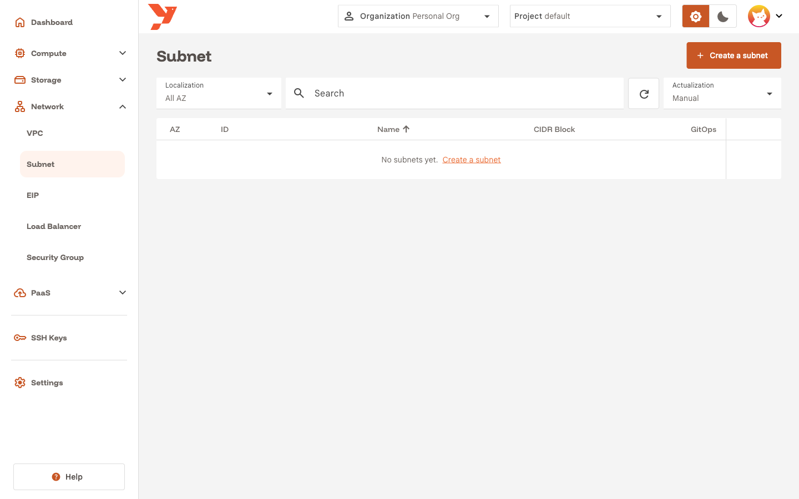
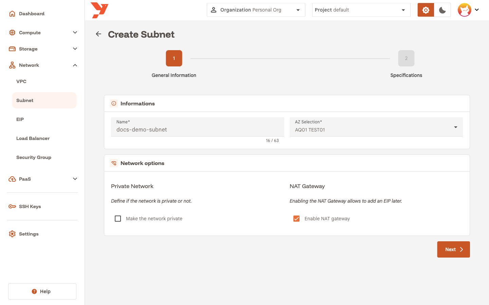
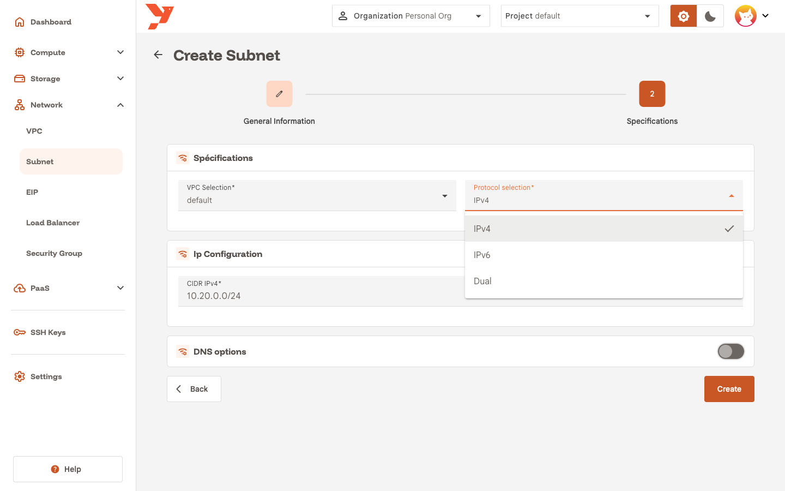
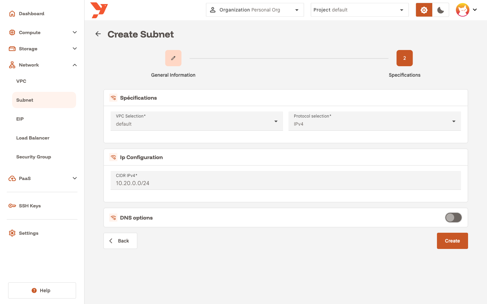
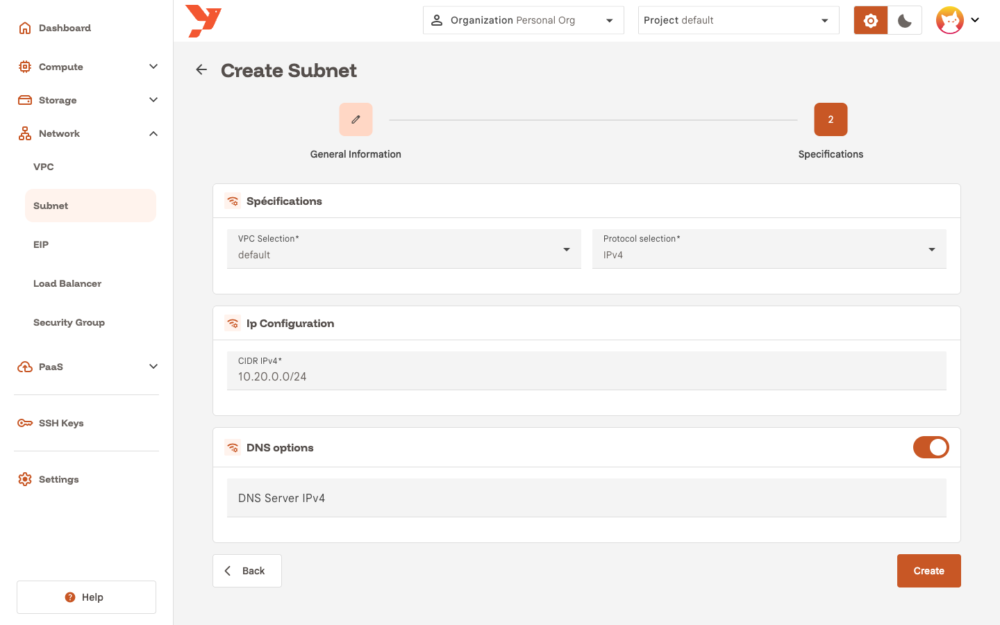
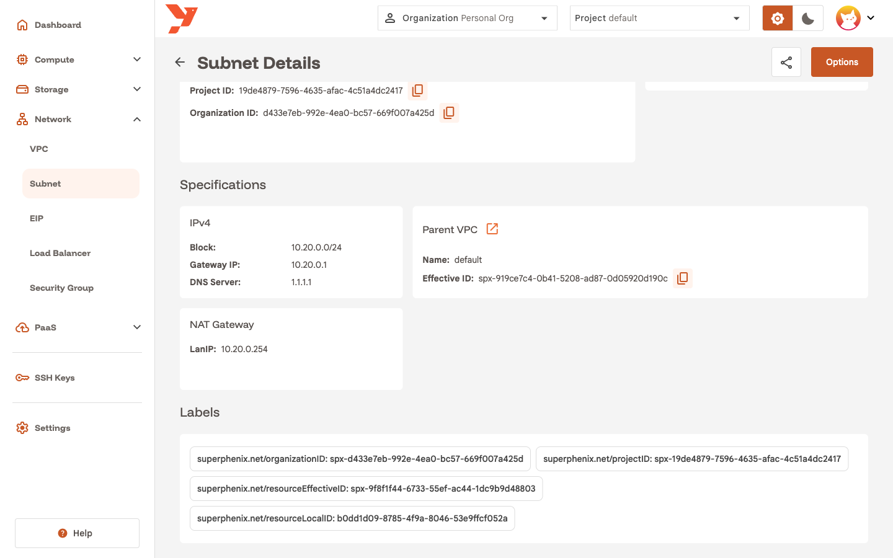

Create a subnet with a NAT gateway
A subnet is a private network segment with its own CIDR inside a VPC. It lives in one AZ, and every VM you attach to it gets a private IP from that CIDR. The VPC routes traffic between its subnets.
You create a subnet when the default one does not fit: to pick your own address range, to isolate a group of VMs, or to get a NAT gateway. The NAT gateway gives the VMs outbound Internet access and is the attachment point for an Elastic IP (EIP). This guide creates docs-demo-subnet with a NAT gateway in one pass.
For the concepts behind VPCs, subnets and gateways, read Network.
Before you start
- Select your organization and project in the top bar.
- Have a VPC in the target AZ. Each AZ ships with a
defaultVPC. - Choose a CIDR.
- Keep the CIDR clear of the other subnets in the VPC, and stay at
/24or larger. The guide uses10.20.0.0/24, which does not overlap thedefaultsubnet at10.10.0.0/16.
Open the wizard
- In the sidenav, open Network and click Subnet.
- Click Create a subnet.

The wizard has two steps: General Information and Specifications.
Step 1: General Information
- Enter a Name, for example
docs-demo-subnet. - Pick the AZ in AZ Selection. The subnet and every VM on it stay in that AZ.
- Under Network options, check Enable NAT gateway.
- Leave Make the network private unchecked for this guide.
- Click Next.

What the two options do
Enable NAT gateway creates a gateway inside the subnet and adds a default route through it. Traffic from a VM goes to the subnet gateway, then to the NAT gateway, then to the Internet, with the gateway's address as source. Without it, the VMs can reach the other subnets of the VPC and nothing outside. The gateway is also what an EIP attaches to, so the EIP wizard lists subnets that have one and hides the others.
Make the network private cuts the subnet off from every other subnet, including the ones in the same VPC. VMs on a private subnet talk to each other, to the gateway, and to the Internet if the subnet has a NAT gateway. Use it for workloads that must stay unreachable from the rest of the project. For finer rules, keep the subnet open and use security groups instead.
You can change both options later from the subnet details page with Options → Edit. One exception: the console refuses to disable a NAT gateway while an EIP still uses it. Delete the EIPs first.
Step 2: Specifications
- Pick the VPC in VPC Selection. The list shows the VPCs of the AZ you chose. The guide uses
default. -
Pick the address family in Protocol selection:
Option Fields shown Use it when IPv4CIDR IPv4 Your workloads use IPv4 alone. This is the default. IPv6CIDR IPv6 Your workloads use IPv6 alone. DualBoth You want each VM to get one address of each family. 
-
Enter the range in CIDR IPv4, for example
10.20.0.0/24. ForIPv6orDual, fill CIDR IPv6 as well, for examplefd00:10:20::/64.
-
Leave the DNS options switch off to hand VMs the platform resolvers,
1.1.1.1for IPv4 and2606:4700:4700::1111for IPv6. Switch it on to set your own DNS Server IPv4 and DNS Server IPv6. VMs receive the resolvers through DHCP.
-
Click Create.
You cannot change the VPC, the protocol or the CIDR after creation. To move to another range, create a new subnet and attach the VMs to it.
Read the subnet details
The console opens the subnet details page. The Specifications section shows what the platform derived from your CIDR:
- Block: the CIDR you entered.
- Gateway IP: the first address of the range,
10.20.0.1here. VMs use it as their default route. - DNS Server: the resolver handed out by DHCP.
- Parent VPC: the VPC name and ID, with a link to its details.
- NAT Gateway → LanIP: the last address of the range,
10.20.0.254here. This card appears when the subnet has a NAT gateway.

The Private field under General Information shows Yes or No for the private option.
Addresses the platform keeps
IPAM never assigns two addresses of the range to a VM:
- the first address, used by the subnet gateway;
- the last address, used by the NAT gateway when enabled.
A /24 leaves 252 addresses for VMs. A /30 with a NAT gateway leaves none, and the wizard rejects /31 and /32.
Next
- Create a virtual machine and attach it to the new subnet in the wizard's Network step.
- Expose a VM with an Elastic IP once the VM runs.